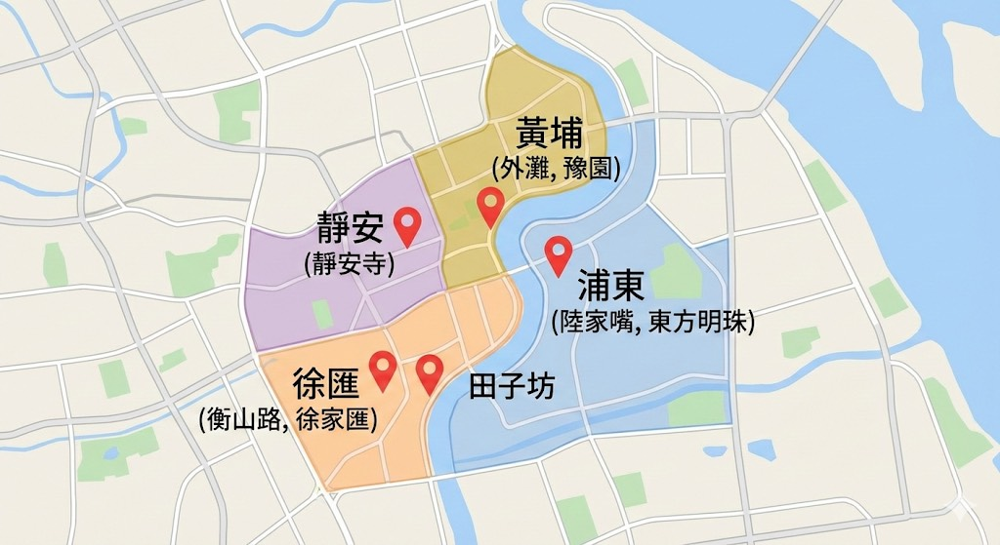

🧧 2026 桃園第一家過年上海遊
旅遊區間：2026/02/18 - 02/22
📑 待辦事項與重要預約
- 訂購上海機場接送
- 事先加入南方航空會員，2/16 18:05 開放選位
- 準備 Esim/實體 Sim 卡及旅遊平安險
- 餐廳訂位：
- 銘門盛宴：電話訂位 02163668868
- 肉串汪 (外灘店)：021-66058557
- 景點預約：
- 朵雲書院旗艦店：提前 7 天至微信公眾號預約 (一人一約)
- LV 巨輪內部參觀：電話預約 (一人一約)
📍上海旅遊分佈參考地圖

🗓️ 每日行程安排表
| 日期 | 行程內容與景點 | 備註 |
|---|---|---|
| 2/18 (三) | 南方航空 (18:05~20:05) 抵達上海，飯店入住
• 安排浦東機場接機至飯店 |
萬和至臻飯店 (日月光店) |
| 2/19 (四) | 朱家角古鎮 (搭船進入) → 散步外灘 → 乍浦路橋 (外灘燈光秀絕美視角) → 外白渡橋 → 黃浦江遊船 | 晚餐：肉串汪 (外灘店) |
| 2/20 (五) | 南京東路步行街 → 北外灘 → 泰公線渡輪 → 陸家嘴天際線 (手扶梯三件套) → 朵雲書院 (52層天空之城) → 魔都三件套拍照 → 浦東美術館 (日落) → 豫園商城燈會 |
午餐：滬西老弄堂麵館 晚餐：太二酸菜魚 |
| 2/21 (六) | 南京西路站 (LV巨輪、星巴克烘焙工坊、張園) → 靜安寺拜拜 → 愚園路 (梧桐樹街、甜點) → 安福路 → 武康大樓 | 晚餐：外婆家 (百聯徐匯店) |
| 2/22 (日) | 田子坊漫步 → 11:00 前往機場送機 → 14:35 起飛回台 | 機場送機準備 |
📸 行程景點速覽

📍外灘與黃浦遊船夜景

📍陸家嘴天際線與魔都三件套

📍朱家角古鎮水鄉

📍武康大樓歷史建築

📍靜安寺金頂建築

📍南京路步行街